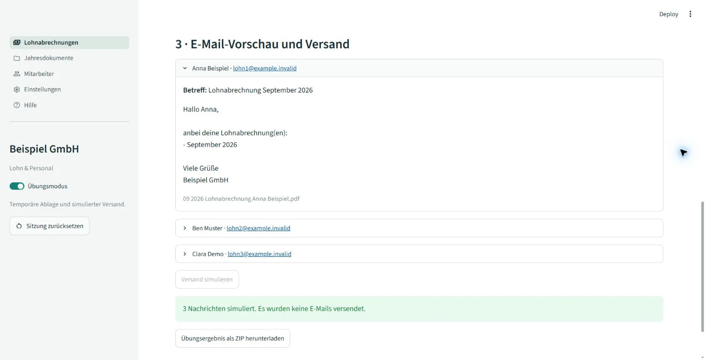

Export bestätigen
Die Vorschau zeigt Person, Zeitraum, Betrag und Zielordner. Erst die Bestätigung erzeugt Einzel-PDFs und, falls gewählt, die Zahlungsdatei.
Apps & Automationen
Die lokale Browser-App zerlegt Sammelunterlagen in persönliche PDFs, ordnet die Ablage zu und bereitet Mitarbeitermails sowie bei Monatsabrechnungen eine Zahlungsdatei vor. Das Office prüft und gibt die Ausgaben getrennt frei.
Weniger manuelle Dokumentarbeit je Person: Trennung, Benennung, Ablage und Nachrichtenvorbereitung sind in einem bedienbaren Ablauf gebündelt.

| Unterlagen | Persönliches Dokument | Zahlungsdatensatz |
|---|---|---|
| Monatsabrechnungen | Seiten nach Person und Abrechnungsperiode trennen, benennen und zuordnen. Korrekturen bleiben als eigene Unterlagen erkennbar. | Optional. Auszahlungsbetrag und IBAN werden geprüft. Korrekturabrechnungen gehen nicht als reguläre erneute Zahlung in die Datei ein. |
| JahresnachweiseLohnsteuerbescheinigung · SV-Jahresmeldung | Dokumenttyp und Jahr aus dem Dateinamen, Person aus dem Seiteninhalt. Erkannte Lohnsteuer-Stornoseiten werden ausgelassen. | Keine Zahlungslogik. Jahresnachweise erzeugen keine Überweisungsdatei. |
Die Tabelle lässt sich auf kleinen Bildschirmen seitlich verschieben.
Ohne eindeutige Person und Ablage bleibt der Eintrag blockiert. Eine abweichende IBAN sperrt den Zahlungsdatensatz. Korrekturunterlagen erfordern eine gesonderte fachliche Prüfung ihrer Zahlungswirkung.
Die eingeführte Anwendung bündelt die zuvor getrennten Fachabläufe und ergänzt gemeinsame Kontaktpflege, Vorschau und Übungsmodus. Dadurch lässt sich derselbe Prozess vor einer produktiven Ausgabe mit Beispieldaten durchspielen.
Ändern sich Eingabedateien, Kontakte, Ordnerzuordnung oder Einstellungen nach der Analyse, muss die Vorschau neu erstellt werden. Identische Zieldateien werden übersprungen; gleicher Name mit anderem Inhalt führt zum Abbruch.
Im Übungsmodus entstehen temporäre Dokumente und lokal lesbare Nachrichten. Beim Wechsel in den Produktivmodus wird der vorbereitete Versandplan verworfen. Auch die exportierten Anhänge werden vor dem Versand erneut auf unveränderten Inhalt geprüft.
Kontakt- und Ordnerdaten sowie ausgegebene Unterlagen werden im gemeinsamen Bestand fortgeschrieben; Einstellungen und Versandprotokoll bleiben lokal. Stammdaten werden nacheinander auf einem Rechner bearbeitet und anschließend synchronisiert.
Abrechnungserstellung und fachliche Berechnung liegen bei der Steuerberatung. Die App bereitet vorhandene Unterlagen intern auf; sie berechnet keinen Lohn und übermittelt keine Behördenmeldungen.